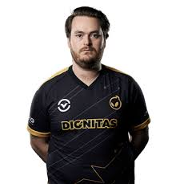
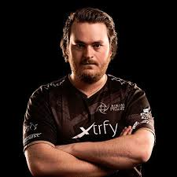

После игры с несколькими командами с 2010 по 2012 год, Фриберг подписал
контракт с Ninjas in Pyjamas[2]. За время работы с командой он помог им
продолжить рекордную серию побед на 87 картах на LAN-турнирах, и забрал
домой главный трофей с ESL One Cologne 2014[3]. 1 июля 2017 года Фриберг
расстался с командой[4].
В начале декабря 2015 года был запасным игроком команды Vegetables
Esports Club по Dota 2 при регистрации на очередной major от Valve.
[источник не указан 1117 дней]
В августе 2017 года Фриберг подписал контракт с OpTic Gaming[4].
Фриберг подписал контракт с командой Heroic в мае 2018 года[5].
За 18 месяцев, проведенных в команде, он выиграл несколько турниров,
в том числе GG.Bet Sydney Invitational в марте и TOYOTA Master CS:GO
Bangkok в ноябре 2018 года, так же помог команде попасть в топ 15
лучших команд по версии HLTV.org. В августе 2019 года покинул коллектив[6].
В январе 2020 года, Фриберг вместе с Патриком «f0rest»
Линдбергом, Ричардом «Xizt» Ландстрёмом и Кристофером
«GeT_RiGhT» Олесундом подписали контракт с Team Dignitas,
воссоединив бывшую команду NiP, кроме Робина «Fifflaren» Йоханссона, который уже завершил карьеру[7].